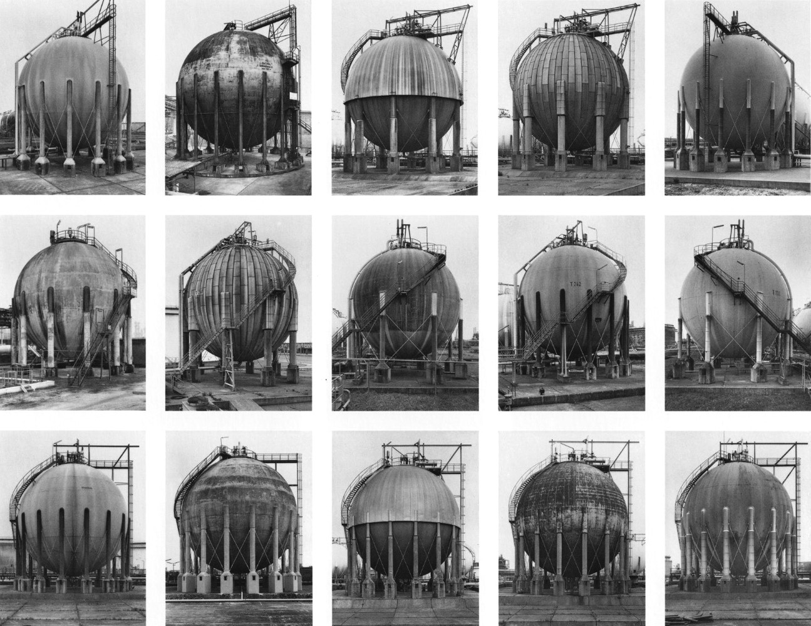
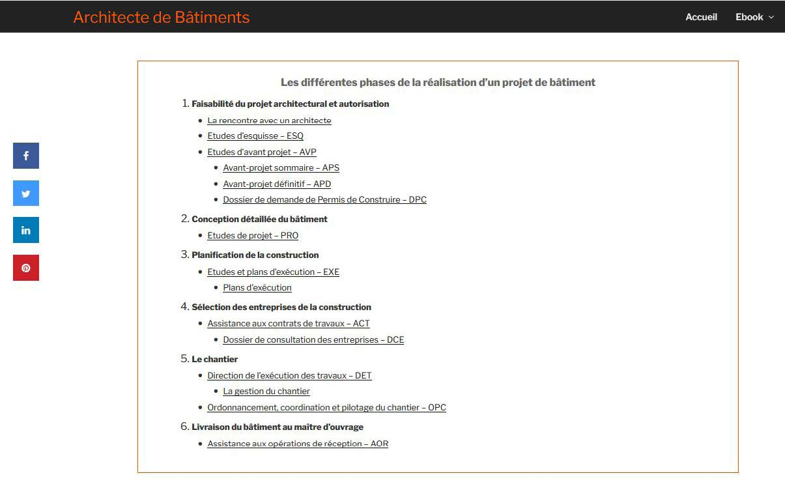
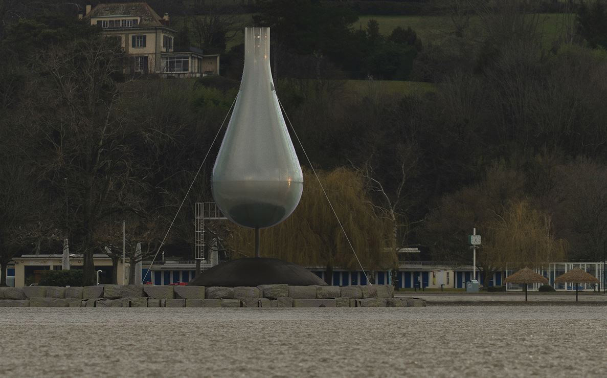
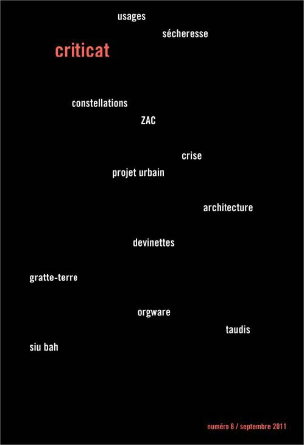
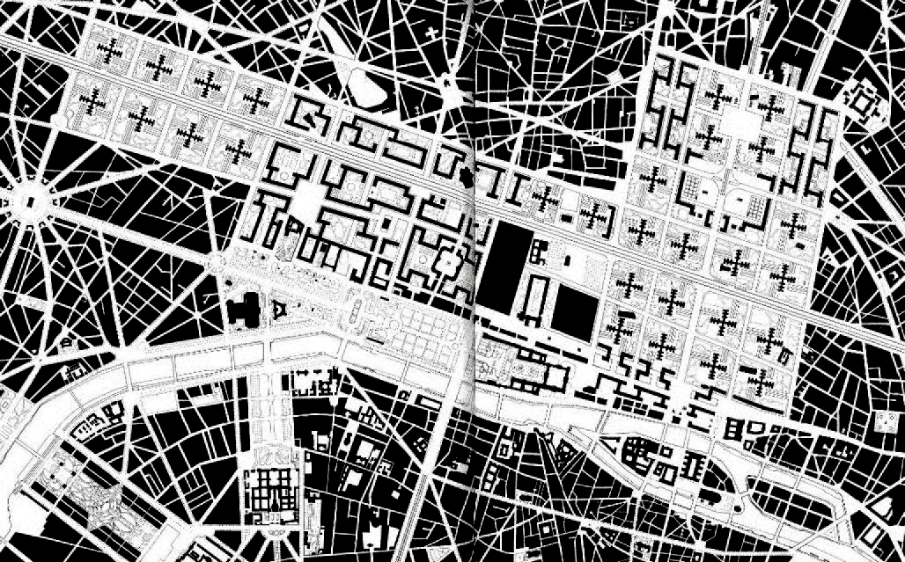
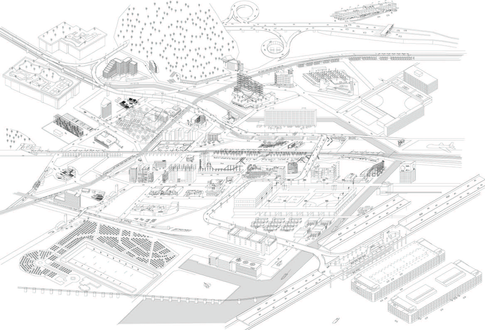
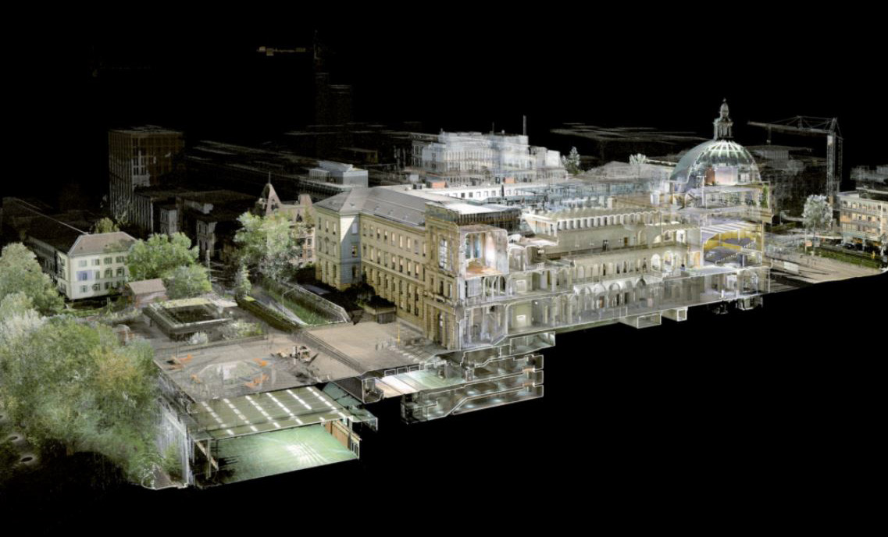

Du renouvellement de la description, plasticité d’un concept à l’ère d’une architecture écologique
Bastien Ung
Club ASAP 06
mars 2025
Temps de lecture : 5 min
Le projet architectural, pour peu qu’il soit envisagé pour être construit, agit sur deux plans performatifs qui ont trait à l’espace : il est un acte de création et de modification. Autrement dit, toutes les idées théoriques et les caractéristiques matérielles et techniques, synthétisées dans des représentations, créent les conditions de son effectuation dans le réel qu’il vient modifier. La notion de description est fondamentale dans ce processus. André Corboz dans un texte issue de son livre Le territoire comme Palimpseste et autres essais (2001) nous aide à y penser en distinguant deux approches : celle de la lecture et celle de l’écriture. Il s’agirait alors de lire un état présent (dans son épaisseur historique si l’on suit bien André Corboz) puis d’en proposer une réécriture à travers l’acte positif du projet.

Il distingue plusieurs catégories de description, la première serait “instrumentale”, elle sert à fonder le projet, à en expliquer les intentions et le contenu. La seconde serait “rhétorique”, elle est un fait de communication de l’ordre du discours établit comme “une preuve anticipée” de la pertinence du projet. La troisième description est celle de la “réalisation du projet” ou encore “le retour de l’objet scientifique sur l’objet matériel, qui en est modifié”. Une description après coup donc, qui revient sur les lieux du crime.
On peut interpréter cette succession didactique comme ceci, la première description est le corps du projet, la somme des dessins et textes qui le constitue. Cette somme plus ou moins épaisse est ritualisée, elle correspond à des étapes, à des “rendus”. La seconde pourrait faire partie de la première et s’incarne pour moi dans l’objet-image qui est celle de la “perspective de rendu”. Une image, souvent réaliste, qui décrit le projet comme si il était déjà-là, inséré dans son “contexte”. La troisième description pourrait s’apparenter à l’acte critique, souvent proféré par quelqu’un d’autres que celui qui en est l’auteur initiale (les architectes sont rarement autocritique), il vient vérifier que la réalité est bien conforme à ce qui a été décrit. Il peut aussi venir souligner des effets inattendus qu’ils soient bon ou mauvais.



Paola Vigano a produit une autre pensée importante sur la description faisant écho à celle émise par André Corboz, elle formule dans son livre Les territoires de l’urbanisme. Le projet comme producteur de connaissances (2012) trois critiques qui sont adressées à l’acte descriptif. La première est que la description n’est jamais complète, elle est “une définition imparfaite”. La deuxième critique est celle de la description comme “l’impossible copie du monde”. André Corboz, lui, parle de la tentation délétère de “l’inventaire maniaque” qui se perd dans une description sans problématique laissant transparaitre une sorte d’angoisse de l’objectivité scientifique. Cette critique vient appuyer l’argumentaire d’une description devant être située et motivée par un regard spécifique sur les choses. La troisième critique est celle des “biais de lecture” correspondant à la culture de l’observateur-descripteur. En effet, nous ne pouvons-nous empêcher de voir ce que l’on reconnait. Il est alors primordial de s’éloigner des idées reçues et de l’implicite.
L’apport de Paola Vigano à la théorie de la description réside dans son effort de faire raisonner cette posture particulière dans une historicité. A la suite de ses critiques, elle formule trois nécessités qui ont amenés les architectes, urbanistes et paysagiste à produire des analyses documentaires sur les lieux où il.le.s agissent. La première de ces nécessités est de sortir “des cadres globaux du modernisme” qui ont trop souvent vu la Tabula Rasa annuler le besoin de description puisque, dans ces conditions, le projet est absolu et sa description suffit à décrire le territoire. Tandis que l’internationalisme prétendais appliquer au monde des typologies génériques correspondant au besoin universellement similaire de l’Homme moderne. La deuxième nécessité est alors de multiplier les points de vue. Posture rendu d’autant plus nécessaire dans un monde post-moderne où l’idée de multitude et de complexité semble remplacer les valeurs traditionnellement stables de localité et de masse (dans le sens marxiste du terme). La troisième nécessité est celle d’opérer des “description de description”. Ici, Paola Vigano conseille de faire machine arrière, de regarder dans le rétroviseur de la pensée afin d’analyser des conceptions afin d'en repérer les faiblesses notamment dû aux biais culturels évoqués précédemment. On peut rapprocher ce souci de meta-analayse au concept de déconstruction propre à la théorie féministe actuelle.


Droite - Description du territoire = description du projet : Dessin axonométrique issue du livre Made in Tokyo par l’atelier Bow-Wow, 2001
A la suite de ces auteur.ice.s, nous pouvons nous poser la question de l’acte de description, ses problématiques et ses nécessités liées à notre actualité. En effet, il me semble que la description semble revenir au centre des préoccupations, et donc du langage théorique, sous l’impulsion de deux attitudes récentes qui touche le champ des métiers du territoire et de l’architecture. Je citerais ici l’approche de l’enquête liée à la théorie de l’anthropocène et en particulier à partir de la figure tutélaire de Bruno Latour ainsi que l’accent mis sur la réhabilitation du patrimoine bâti faisant une entrée importante dans les missions de l’architecte depuis plus d’une dizaine d’année. Ces deux approches sont clairement liées à l’impact de l’éthique écologique sur la discipline architecturale.
La “description Latourienne” implique de sortir des présupposés anthropocentrés de l’observation en ouvrant les perspectives de nos perceptions aux forces invisibles et aux “animés”. La problématique semble clairement posée : comment faire évoluer nos outils et nos méthodologies afin d’adresser politiquement et matériellement les mutations climatiques en cours ?
Alexandra Arènes se propose d’actualiser la forme cartographique pour mieux rendre compte de la complexité de la terre vue comme un espace habité soumis à des relations complexes (spatiales et temporelles) entre phénomènes biologiques et actions humaines.
Le projet de la réhabilitation architecturale semble quant à lui poser la question du renouvellement des savoirs architecturaux vers une meilleure attention vers l’existant. L’enseignement du relevé, quasiment absent dans les ENSA (hors école du patrimoine), semble (re)trouver un état de grâce.
Ainsi, l’acte de description comme outil fondamentale du projet architectural voit ses finalités idéologiques se transformer au gré de l’évolution du débat architectural et voit sa nécessité réitérée pour mieux penser et bâtir la relation entre l’architecture et le monde tel qu’il va.

Ce modèle numérique de Zurich est réalisé à partir de donnée obtenue par une technologie télémétrique dite LIDAR (Light Detection and Ranging)
L'ensemble des articles issus du club asap 06 sont disponibles ci-dessous:
| # | Titre | Auteur | |
|---|---|---|---|
| 600 | To Build an Element | ASAP | Club #06 |
| 601 | L'Utopie se matérialise-t-elle ? | Salma Bensalem | Club #06 |
| 602 | Fragments d'un discours architectural | Lucrezia Guadagno | Club #06 |
| 603 | Du renouvellement de la Description | Bastien Ung | Club #06 |
| 604 | Le Diagramme entre Contrôle et Fuite | Louis Fiolleau | Club #06 |
| 605 | The Discursive Turn | Marie Frediani | Club #06 |
| 606 | Qu'est-ce qu'un élément ? | Hugo Forté | Club #06 |